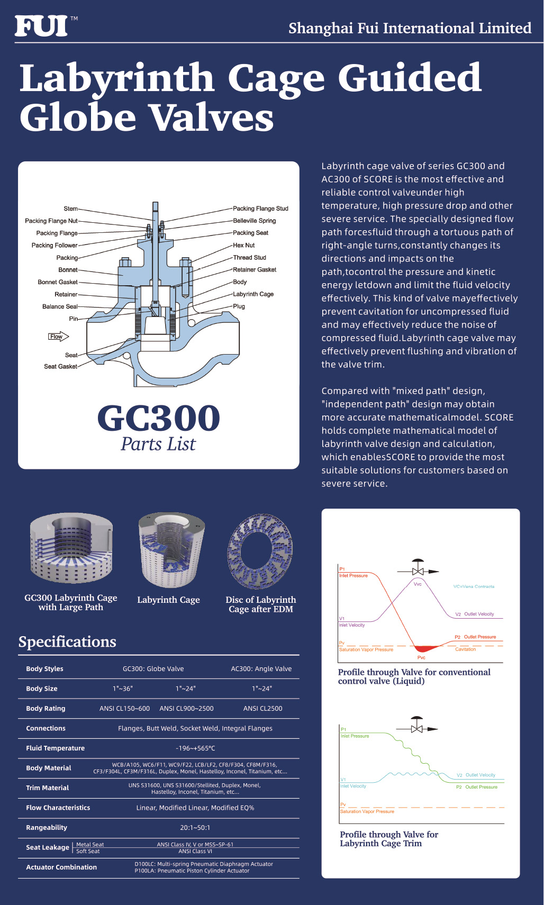
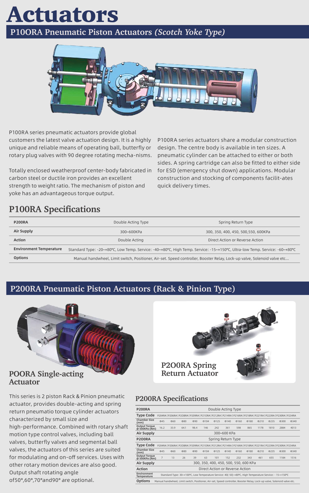
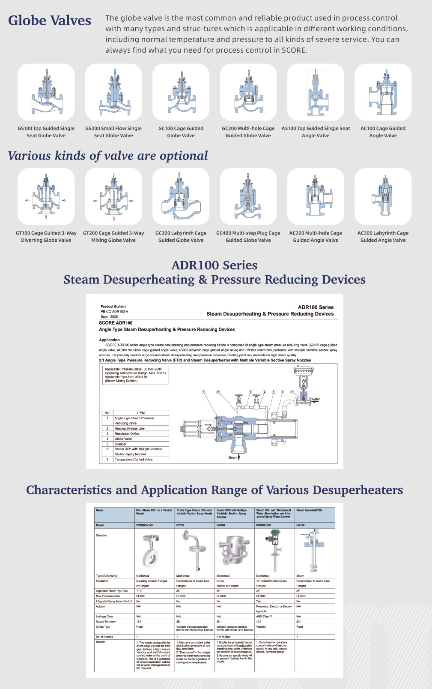
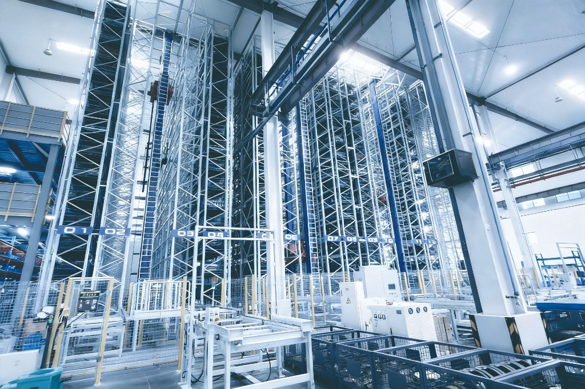
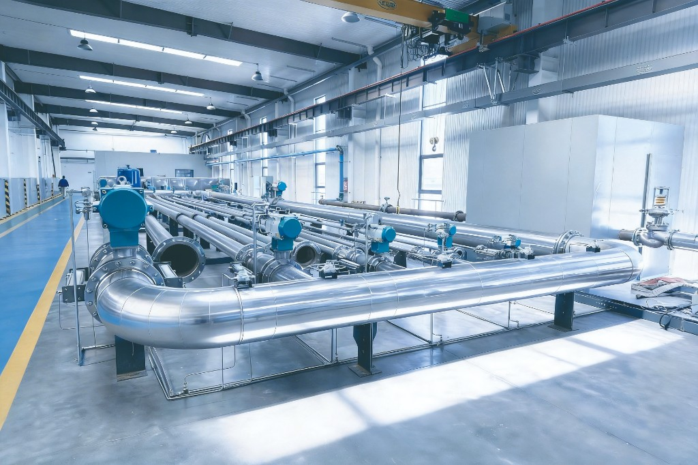
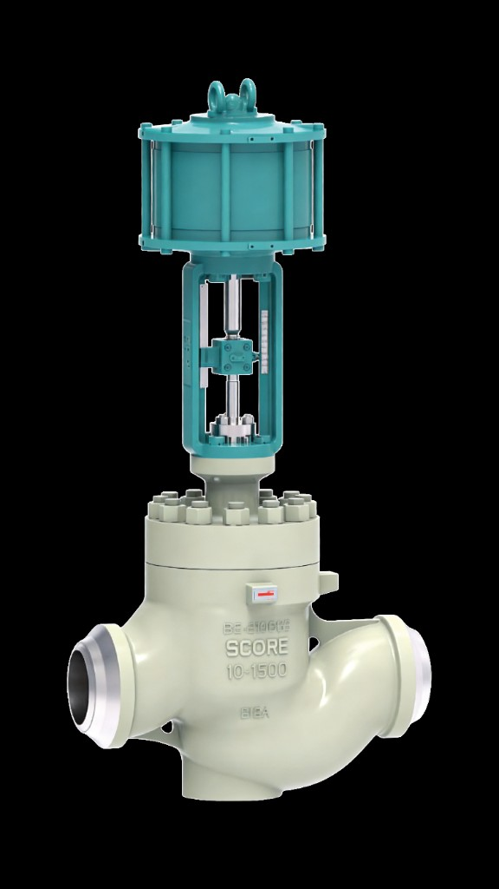
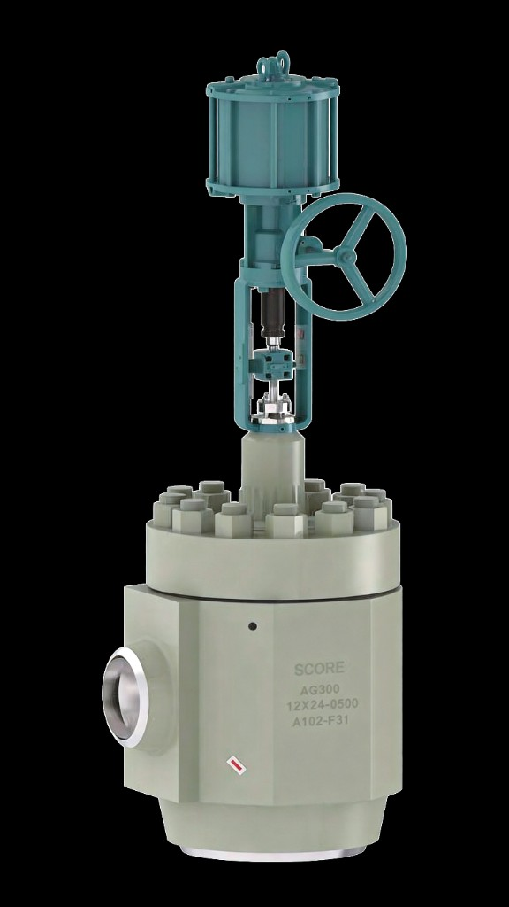

Запорный клапан — наиболее распространённое и надёжное изделие для регулирования процесса, с множеством типов и конструкций для разных условий — от нормальных до severe service. В нашем портфеле вы найдёте решение для любого процесса.




Лабиринтный клеточный клапан серий GC300 и AC300 — один из наиболее эффективных и надёжных регулирующих клапанов для высоких температур, высокого перепада давления и других severe service. Специальная геометрия канала заставляет поток проходить через извилистые повороты, эффективно снижая давление и кинетическую энергию и ограничивая скорость. В отличие от обычных клапанов, где давление жидкости может упасть ниже давления паров и вызвать кавитацию, лабиринтная клетка удерживает давление выше этого уровня по всей трассе. Снижаются кавитация, шум и вибрация, повышается стойкость внутренностей. Конструкция «независимого пути» даёт более точную математическую модель. Мы предлагаем полную модель расчёта лабиринтного клапана для подбора решения.
| Параметр | GC300 Запорный | AC300 Угловой |
|---|---|---|
| Тип корпуса | Запорный | Угловой |
| Размер | 1"–36" | 1"–24" |
| Класс давления | ANSI CL150–600, CL900–2500 | ANSI CL2500 |
| Присоединения | Фланцы, приварка встык, сварка в раструб, цельные фланцы | |
| Температура среды | -196°C – 665°C | |
| Материал корпуса | WCB/A105, WCB/F11, WC9/F22, LCB/LF2, CF8/F304, CF8M/F316, Duplex, Monel, Hastelloy, Inconel, Titanium и др. | |
| Материал внутренностей | UNS S31600, Stellited, Duplex, Monel, Hastelloy, Inconel, Titanium и др. | |
| Расходная характеристика | Линейная, модиф. линейная, модиф. EQ% | |
| Диапазон регулирования | 20:1 – 50:1 | |
| Утечка по седлу | Металл: ANSI IV, V или MSS-SP-61 · Мягкое: ANSI VI | |
| Привод | D100LC Многопружинная мембрана · P100LA Пневмоцилиндр | |





Серия P100RA (тип Scotch Yoke) — надёжный механизм поворота на 90° для шаровых, поворотных клапанов; модульная конструкция. Серия P200RA (шестерня-рейка) — компактные двойного действия или с возвратной пружиной; угол поворота 50°, 60°, 70° или 90°.


| Параметр | Двойного действия | С возвратной пружиной |
|---|---|---|
| Типоразмер | P204RA–P234RA | P204RA–P234RA |
| Размер камеры (мм) | Ø45–Ø340 | Тот же |
| Выходной момент @ 500 кПа (Н·м) | 16.2–4013 | 7–1516 |
| Питание воздухом | 300–600 кПа | 300, 350, 400, 450, 500, 550, 600 кПа |
| Действие | Прямое или обратное | |
| Температура окружающей среды | Стандарт 30–100°C · Низкая -40~+80°C · Высокая -15~+151°C | |
| Опции | Ручной маховик, концевые выключатели, позиционер, редуктор, дроссель, реле, замок, электроклапан и др. | |

| Типовой диапазон | Значение |
|---|---|
| Класс давления | ANSI Class 150 – 2500 (severe-service) |
| Температура | -196°C – 665°C (по материалам) |
| Особенности | Многоступ. дросселирование · антикавитация · низкий шум · стабильность при высоком ΔP |
| Применение | Oil & Gas · нефтехимия · энергетика · пар |
{kind=link}
{kind=link}
{kind=link}